来源：https://vitp3qxqy72.feishu.cn/docx/E4RhdNtSroDASvxg6l1c4wktnbg
半年前我还是一个电商小白，13年的实体打工人到两次创业失败，去年9月份加入生财10月份开始接触短视频带货，到今年4月份，单场破百万GMV&抖音LV0周榜第三的复盘分享。
内容并没有很干，也没有多NB的搞钱技巧，我也不是什么天赋型选手，只是根据我自己的经历进行阐述，给自己做个总结，并让大家了解一下我目前所从事的项目内容。
短视频带货我认为最核心的一点：量变引起质变！
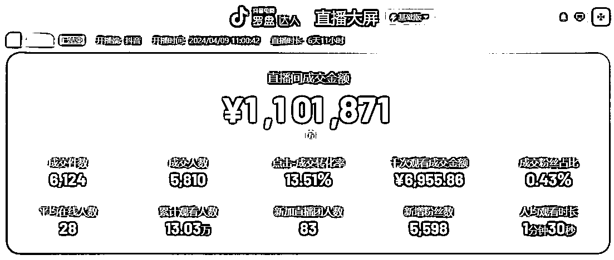
圈友们好，我是上进日出，看到这张图第一感觉是不是很爽，是的，没错，我当时也挺震惊的，我才是一个入局半年短视频带货的新手小白，就像中彩票一样手足无措，可能有人会说，真是走了狗屎运，但我会说我站在了贵人的肩膀上，感谢遇见，感谢我遇到的所有贵人们，随后我的贵人之一说：“不要小富即安”，索性我立马开始复盘。
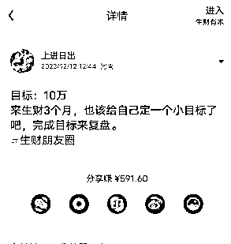
为了方便圈友阅读，具体内容分为5个板块
一、负债之路
两次创业失败，虚荣心的过度表现
二、入局视频号
怎么这么难，单纯剪辑都很要命，这么大年龄了，我到底行不行？
三、短视频直播带货初尝试
新手小白在1周内做到单品爆1000单，我是怎么做到的？
四、GMV110万是怎么达成的？
做短视频直播想要打爆一个品，需要做什么？
五、双频共振是必杀技
如果做短视频带货，短视频爆了，不会直播的小白怎么播能拿到更大的结果？
我以前是一个兢兢业业、埋头苦干的实体人。我用13年的时间，从原来的身无分文，到现在的负债累累，在当下这个时代，你可能见惯了太多的人与你分享成功，以及让你如何学习成功，但我今天鼓起勇气，总结了13年以来所有失败的经验，在开篇第一个章节也希望能与你一同分享我的失败经历和如何避坑。
2009年参加第一份销售工作，每个月底薪只有400元，当时虚荣心很重，干了2年，为了结婚有面子，在没有任何积蓄的情况下，借钱买了第一套房，结了婚换了工作，月收入平均达到了5000元，看到身边人都很多比我强，就开始动起了创业的念头，债台高筑的情况下又借高息融资开了公司，第一年还好，有些盈利，看到身边人又买了第二套房，索性把老家的房子卖了，付了首付也买了第二套房， 虚荣心丝毫不想输给别人，干了2年失败了，负债进一步扩大，又上了一年班，但是上班根本无法还清债务，就一直有想要翻身必须做生意的想法，又一次融资开始第二次创业，第一年收益还行，又赶上3年特殊情况，最后一共干了3年不得不又一次失败了。自我总结：当你的消费大于收入的时候，你没有任何的幸福感，生活会过的很艰辛。没有财务规划，大概率会很悲惨。比较是一个大坑，比较就是陷阱。社交网络前所未有地展示并放大了真实的贫富差距（引用“财富的真相”）。希望我的失败过程中的只言片语能给你些许避坑。但是又仿佛每一次的挫败都在为成功蓄力。
去年4月份开始接触生财，体验了3天课程，内容即丰富又震撼，颠覆了我对电商行业认知，钱还能这么挣，当时因为公司正在清算阶段，不能专注搞项目，也不知道项目该如何入手，严重意识到自己的认知差距，我就开始看书，从经典文学到励志爽文，进而想打开视角提高认知，直到9月份才加入生财，第一个项目是公众号爆文写作，因为时间错过了航海，就自己在家看航海手册开始研究，自己摸索搞了一个月赚到了第一块钱，后来在家人的催促和打击下，放弃了，想想也是，负债那么多，硬是憋家里一个月没挣到钱，但是不甘心，也比较耐挫，我承诺家人再做一个项目，不行我就出去找工作，后来逛了几天的生财贴，看了很多的励志爽文和搞钱项目，最终被一篇文章打动了，很真诚，也很贴合普通人，连接到了他，就有了现在所从事的郭晓文养生项目（全网最懂新手的男人）。很感谢我的引路人-奋斗ing老师。
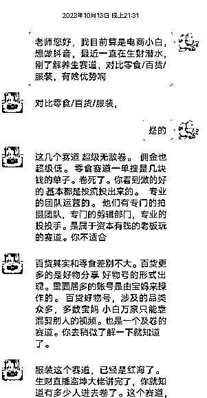
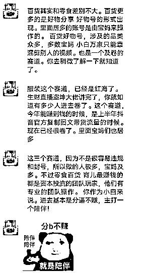
刚开始做剪辑混剪，直接搞崩溃了，做一条视频需要3个小时，每天搞到凌晨2点，直到最后做到第100条视频的时候速度不知不觉提高了很多，同时量变也引起了质变，速度上去了，质量也比之前好了，搞了半个月的混剪视频，开始出单了，第一次开播后没承接多少，因违规下播了，视频最后跑到了50多万，赚到了300块钱，当时兴奋级了，接下来就单品陆续爆单，结合后来的又一个品，大量的测试，每天视频量达到20-30条，做到了当月3.5万的佣金，我拿到这个结果给家人看的时候，骄傲的说:我的选择没有错，我的坚持也没有错，请相信我！
新人想要在短视频带货领域获胜，需要从选择赛道、提升作品质量、增加作品数量以及提升账号权重等多个方面入手。通过不断努力和实践，相信新人一定能够在这个领域取得优异的成绩。
首先，选择一个对手少的赛道至关重要。思考决定选择，选择决定方向，太卷的赛道竞争太大，不容易拿到正反馈，有一定壁垒，不是说技术壁垒，而是心理，例如相对违规性高一点的。
其次，胜出对手质量的作品是关键。作品质量包括内容创意、拍摄技巧、剪辑水平以及产品展示等多个方面。新人需要不断提升自己的创作能力和技术水平，打造出独特且吸引人的短视频内容。这些都可以慢慢练习，但是想要快速搞到钱，还有一种方法， 我没有高质量的作品，我借用别人的行不行（抠像），借力使力不费力，中短期依然有效，平台缺内容，供＜求，那110万怎么打的， 就是用的这种方法，在这里我很感谢Erik老师，他说人一定要剖析自己的优劣势，到底自己适合什么不适合什么，找到自己的优势并放大，有的人就是不适合口播，就是再练还是搞不定，那能不能请人搞，借人搞呢，借力使力。
此外，剪出或者拍出多于对手的作品数量也很重要。这并不意味着要盲目追求数量而牺牲质量，而是在保证质量的前提下，尽可能增加作品的产出量。通过持续更新和发布高质量的短视频作品，可以吸引更多潜在消费者的关注，提高账号的曝光率。
最后，账号权重也是一个不可忽视的因素，可以走单品长期路线。新人需要积极互动、积累粉丝、提高账号活跃度，流量视频和带货视频要有平衡点，从而提升账号权重。这将有助于作品在平台上的推荐和曝光，增加带货的成功几率。
怎么选品，要会看广场，正在直播且场观可以的就说明视频在爆，在点商品详情里带货达人和销量，是否达到自己的预期，对手有多少，有没有增长趋势，最后再看微信指数搜一搜关键词，趋势走向如何，基本可以判定品是否可跟。
如果前期不会选品，就带老师和圈友推荐的品也可以，我喜欢选好品，多号打，持续打，吃透流量，视频上推荐就开播承接流量，11月份一周卖了1000单就是这么一场一场来的。
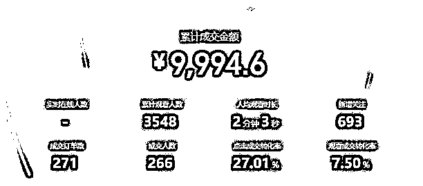
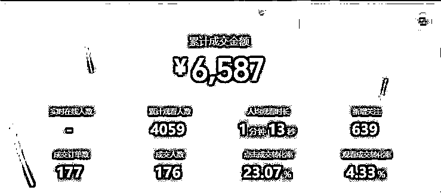
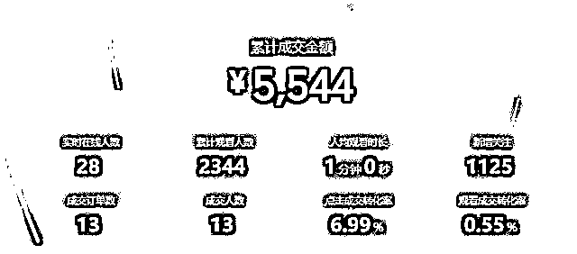
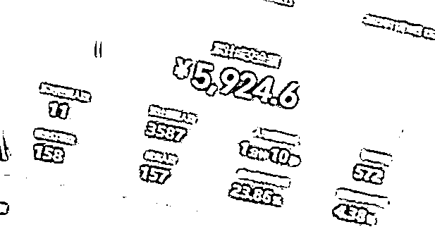
11月份搞了一个月混剪视频，12月份开始抠像+实拍，正因为有了11月份的小成绩，就觉得12月份不得搞了5万啊，最后啪啪打脸，12月搞了5000块，发力点不对，思考不彻底，“骄兵必败”，自我怀疑，自我否定，自称灰色12月，当时很焦虑，很痛苦，如果我的收入达不到预期，炸弹可能会随时引爆。
董宇辉曾说：痛苦的本质来源于你对现状的不满，焦虑的本质来源于你成长速度太慢。往往不开心的人更容易做出伟大的成就，不开心的诗人往往会写出流颂千年的诗篇，不开心的作家往往会写出获得大家好评的作品。与你共勉！
直到1月份，跟了1个别人打爆的品，持续深耕，做到短视频爆量转平播70天，140场，佣金11万，也正是这样奠定了基础，4月份又在抖音打爆了。引用我老师的经典名言：没有白走的路，每一步都算数！
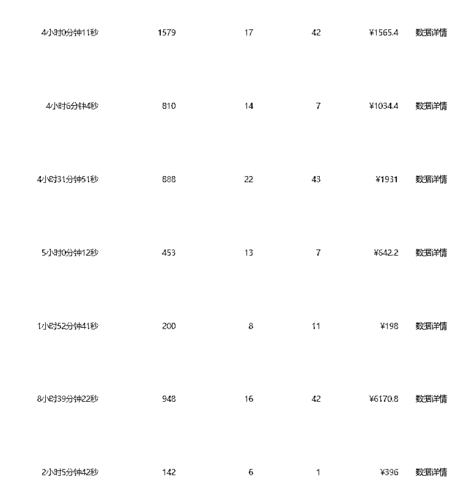
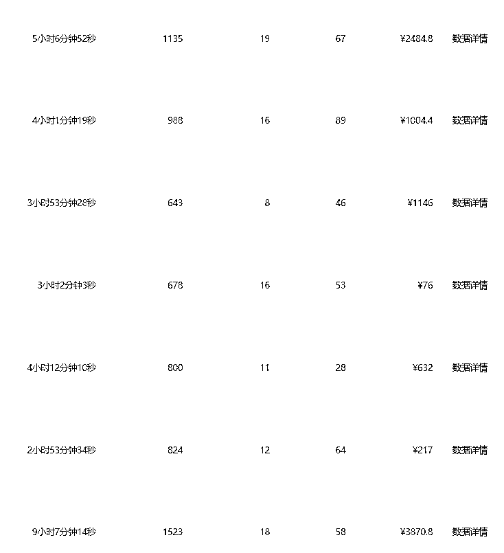
要对品的生命周期有判断，不要自己感觉，有时候感觉都是错的，要调研，广场上还有没有，多不多，圈友有多少在打，1月份开始打这个品的时候，就一直深耕单品单号，口播发布流量视频和带货视频，始终相信慢就是快，有的一天收益几百，有的几千，看到很多圈友爆其他品，心里很痒，但还是忍住了，因为这个品，一直有人出素材，有人爆单，我就一直播，到最后品的流量基本吃完了。
视频号这个品吃完之后，注意力放在选品和实拍上，偶然看到抖音有人在爆单（这里重点说一下，做项目一定多号，多平台，一鱼多吃），还是我熟悉的品，之前也看到过其他品在抖音上有这种引流方式，但是不多就没有去尝试，看到这个直播间之后，并没有马上跟，而是第二天看到还在爆，索性剪辑视频，刚好有一个6000多粉抖音号比较垂直（提前布局没白走），就发布了，第一场播了12个小时，打了20万的GMV，因为直播违规搞下架了，视频号对视频严格，抖音是对直播严格，下播后逐个看处罚细则，总结经验，优化新版话术，第二天拿出一个号，搞号继续打，这一次成功规避了直播违禁词，不敢下播，因为我喜欢把流量吃透，中间我和家人播到第34个小时的时候，打到了85万的GMV，实在扛不住了，找了有实力的代播团队继续打日不落，一直播了6天零11个小时，账号违规下播，基本一周的时间，我和家人每天睡眠时间3个小时，事实证明断引直播间模式在抖音依然适用，抖音用户购买习惯是挂车，没有挂车的话一定要开播承接流量。这一战我称为绝处逢生之战，让我拿到了大结果，因为始终负债的我一直游走在悬崖峭壁，借用木易大佬的经典语句（绑着炸弹在做事），不敢有一丝一毫的松懈，在此我要感谢作品的原创作者-爆款制造机@芬达，还有代播界的吴彦祖@阿祖，没有你们不可能有这110万。
目前各个平台都在扶持真人口播，流量很猛，爆发力很强，对新手是极其友好的，我们可以没资本，没颜值，没积累，只要有一颗不服输的心和一股执着的劲头，结果终归不会太差。生财的诸多大佬写了很多口播技巧文章，可以去搜一下看一看，试一试，心动不如行动。
一个人做项目的四点心得：
1、专注
心无旁骛，万事可破
2、勤奋
付出不亚于任何人的努力，就连神明都会庇佑于你
3、耐挫
皮实一点，不要轻易被困难所打倒，要平衡好心态和懂得自我疗愈，扛不住倒下了，之前的路都白走了
4、正确的初衷
有时候它会成为你的铠甲和护身符，聪明很多时候是智慧的天敌，聪明人跑的都早，定力很重要。
大家都觉得直播遥不可及，之前的我也是习惯爆量开播承接流量，根本不懂什么憋单，强逼单微逼单，要互动，做什么浅层数据，直到后来遇到了肖肖老师（直播界的YYDS），给了我直播70天的勇气，让我理解了直播的真正魅力，同时也做到了双频共振的效果。
短视频和直播间之间还是有很多地方可以相互影响的，短视频可以向直播间引流，这个大家都知道，但是短视频的流量进入到直播间之后，你在直播间内的表现会反过来影响到短视频。比如说你短时间向直播间引流了100个人，100个人进入到直播间之后，假设说有5个人购买的产品，那这个时候你这个短时间的引流转化率只有5%。平台的算法会拿你的这个数据和同类直播间的这个数据进行对比，如果你的数据是比较优越的，这个时候这个直播间的这个短视频转化数据，就会对你的短视频加权，把你的短视频，推更多的流量出去推曝光给更多的人。同时更多的人通过这条短视频并进入到你直播间，进来以后你直播间继续热卖，它就继续给你短视频加权，让短视频更爆，这就是短视频和直播机双频共振的一个基本模型。
当然底层的算法远远比这个复杂，不仅仅考核一个转化率，其实他的很多指标也要考量。但是算法的基本逻辑和我刚刚举例的转化率差不多的，所以为什么很多聪明的直播间他短视频有爆的迹象之后他就24小时不下播，因为短视频爆了就会往你直播间引流，流量进入直播间之后你能转化能做卖货。这个时候直播间就会反向影响到短视频了，就能把短视频推的的更棒引来更多的流量，从而让直播间卖更多的货。保证直播间有稳定精准的在线人群，更好的拉长直播时间，也会保证直播间销售额更加稳定。所以视频爆了之后，不要再给自己设限，上不封顶，直播不封，我不下。
直播干货推荐我师姐@李嗯嗯的复盘分享（ ）
最应该戒掉的恶习是：抱怨。
当遇到麻烦和不顺利的事情时，能解决就解决，解决不了就承受——这才是正确的态度。抱怨有什么用？没有用，因为它只能用来向别人展示自己的无能和无奈而已。（李笑来的财富自由之路）
偶尔气馁是正常的，毕竟谁都不是“铁人。可是在逆境中，或者在一些特定的关键时刻，“放弃”是致命的。
只要不下场，就会有机会，不要过早的自我否定，天赋型选手万里挑一，我们就做勤奋型选手，身边靠勤奋出圈的比比皆是，慢就是快，复利曲线是世界第八大奇迹，学习各种技能，不断积累，把“学到”的东西“做到”了，总有机会在自己的未来体会到复利效应。对于这件事，必须笃信。
水浒传里有一句话：“谁无暴风劲雨时，守得云开见月明”。
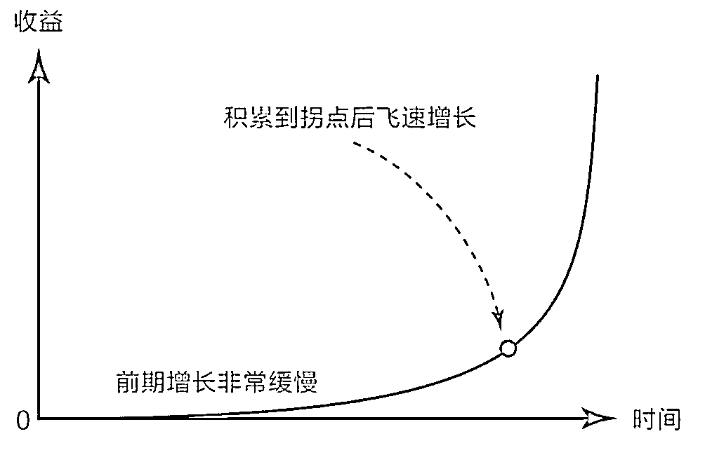
我的动力取决于我对金钱的渴望程度和目标的设定，因为我负债，所以对金钱渴望程度极高；目标，我分为理想目标和预期目标，想要达到预期目标一定要朝着理想目标去前进，还要做有可能实现理想目标的项目，把自己的时间成本放大，注意力聚焦到每周每天，因为注意力＞时间＞金钱。
最后是感谢，感谢所有我遇到的贵人，我在一个深坑里，是你们给我了一根又一根的救命稻草，我选择了死死抓住并往上爬，感谢很多NB的大佬@亦仁@木易@盗坤@纸壳，文章都是干货满满，不断从大佬那里输入力量，鼓励着我，还有诸位老师@郭晓文@李超鹏@Erik@肖肖@奋斗ing，还有很多圈友@芬达@木头疙瘩@冠哥@图图@向阳花@逍遥子@非凡@董小姐@李嗯嗯，太优秀了，和优秀的人在一起，肯定会变得更优秀，一起努力，趁着红利，爆单爆单。希望这篇文章会给你些许帮助，感谢你花时间来看我的帖子，一起上进，一起生财。最后附上一张学习金字塔，共勉！
挣到100万，再来复盘。
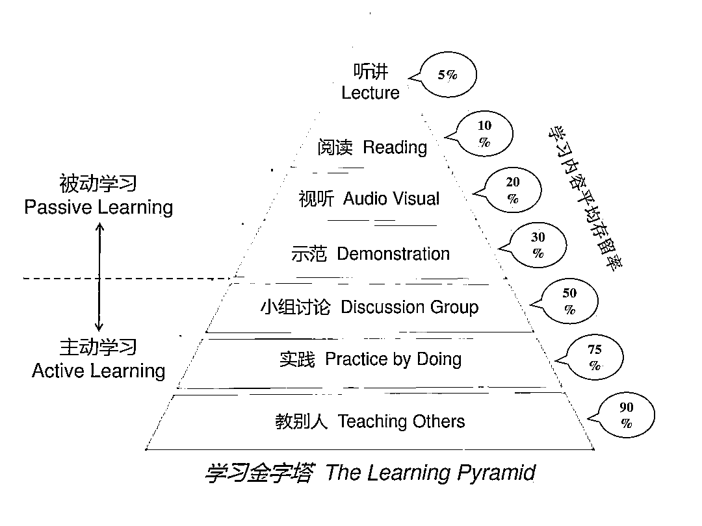